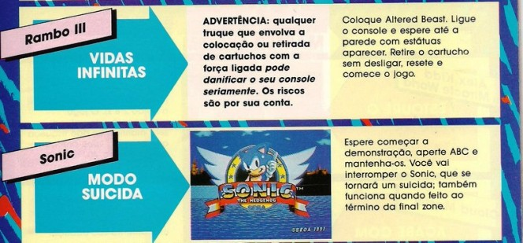

Dica perigosa para o Mega Drive
 :::.Texto por Gigacom
:::.Texto por Gigacom
:::. Pesquisa Milles Prower
fonte: Videogame nº 4
Eu não sei se era só aqui ou em todo o Brasil, o fato é que de vez em quando uma noticia meio doida aparecia para abalar as crenças de quem jogava video game. Era um Zé que dizia que se apertar o botão reset 100 vezes com o Kenseiden enfiado no Master, aparece uma tela especial e o samurai vira uma biscateira que joga purpurina. Outra hora era um Toín da rua de baixo, que jurava de pé junto que VIU o irmão do Sonic depois que fez umas zuacas com o controle. E ainda as vezes o filho do Tião Mata Galo aparecia, branco como quem viu assombração, falando que viu o rabo do tinhoso na ultima fase de Alex Kidd.
Enfim, o problema é quando uma coisa dessas aparece em uma revista que era vendida no Brasil todo (tá, em QUASE todo, no norte era um parto conseguir uma dessas), e com a receita de como fazer a coisa! Eis aqui lhes apresento a dica mais perigosa de todos os tempos, para ser executada em qualquer Mega Drive, segue:

Se a dica funciona? Não sei... deve funcionar .
Agora falando sério, a troca de cartuchos com o video game
ligado pode não queimar nada, como tambem botar fogo em tudo!
Uma vez fiz um teste com o SNES. Eu coloquei o cartucho do Goof Troop,
pressionei e manti pressionado o botão reset enquanto trovaca
pelo cartucho do Top Gear, e após colocar este, soltei o reset e
o jogo funcionou normalmente. Fiz isso com outros cartuchos, as vezes
aparecia alguns bugs, as vezes não, mas de qualquer forma,
não foi preciso ligar pro 193 ou ressucitar o meu SNES no meio
dos testes.
.
Agora falando sério, a troca de cartuchos com o video game
ligado pode não queimar nada, como tambem botar fogo em tudo!
Uma vez fiz um teste com o SNES. Eu coloquei o cartucho do Goof Troop,
pressionei e manti pressionado o botão reset enquanto trovaca
pelo cartucho do Top Gear, e após colocar este, soltei o reset e
o jogo funcionou normalmente. Fiz isso com outros cartuchos, as vezes
aparecia alguns bugs, as vezes não, mas de qualquer forma,
não foi preciso ligar pro 193 ou ressucitar o meu SNES no meio
dos testes.
É interessante fazer isso nos jogos do Sonic, os games ficam meio malucos mesmo. Isso acontece porque quando você coloca qualquer cartucho no video game, algumas informações são jogadas na memoria RAM do console logo que ele é ligado, e ficam lá sendo geridas pelo programa do jogo. Quando você troca o cartucho, essas informações permanecem, e podem continuar na memoria até mesmo se o botão reset for pressionado, só saindo quando o console é desligado. Como essas informações podem provocar o aparecimento até de santo na tela quando outro jogo é inserido, não é dificil prever que alguma coisa extraordinária ocorra, como as vidas infinitas ai da dica, ou mesmo alguns efeitos inesperados nos jogos do Sonic ou em outros jogos.
Mas a grande duvida é: o
processo traz ou não riscos para o console e cartuchos? Sim,
traz, pode ocorrer algum problema ou dano irreversível no
hardware, mas ainda não ouvi falar de alguem que estragou algum
console fazendo esse negócio, até porque os sinais
eletricos trocados entre o console e o cartucho, serão os mesmos
fazendo ou não a troca, não havendo assim qualquer
sobrecarga além daquilo que ambos foram projetados para
suportar. Óbvio que alguns cartuchos podem ser danificados,
principalmente aqueles que usam algum chip especial como Virtua Racing
e Starfox, mas de resto... 
É interessante ressaltar que vários video games vinham com travas para impedir que isso fosse feito enquanto o aparelho estivesse ligado. O NES, SNES e Mega Drive 1 (pelo menos algumas versões asiáticas de exportação) vinham com essas travas que impossibilitavam retirar o cartucho com o video game ligado, mas outras versões desses mesmos consoles não tem as tais travas. Enfim, fazer esse tipo de operação tem o risco de se estragar o aparelho, mas pode e não pode ocorrer, então se for fazer vai rolar o que Godi quiser
Acesse o Trombone e comente sobre essa matéria!